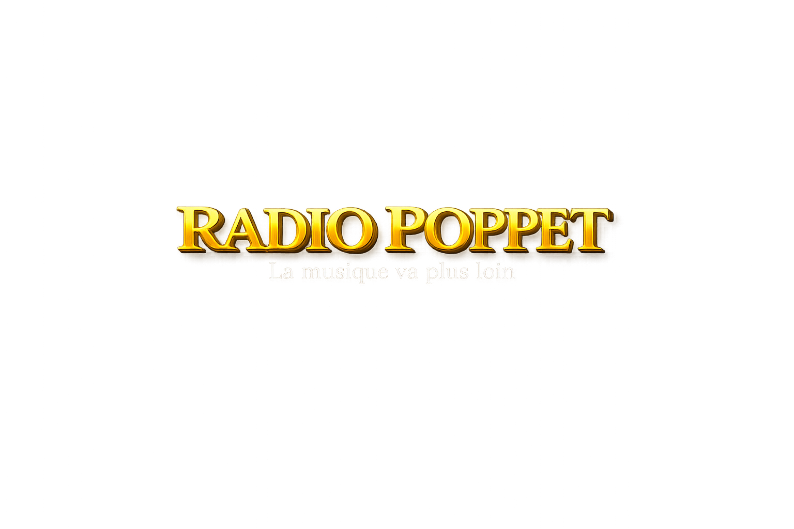

RADIO POPPET
La musique va plus loin
🎧 Écouter en direct
Votre navigateur ne supporte pas le lecteur audio.
▶ Écouter sur iPhone
🍎 Installer sur iPhone (App Store)
🤖 Installer sur Android (Google Play)
Les liens seront ajoutés dès que l’application sera publiée.
📱 Installer la radio sur mon téléphone
Votre navigateur ne supporte pas l'audio.